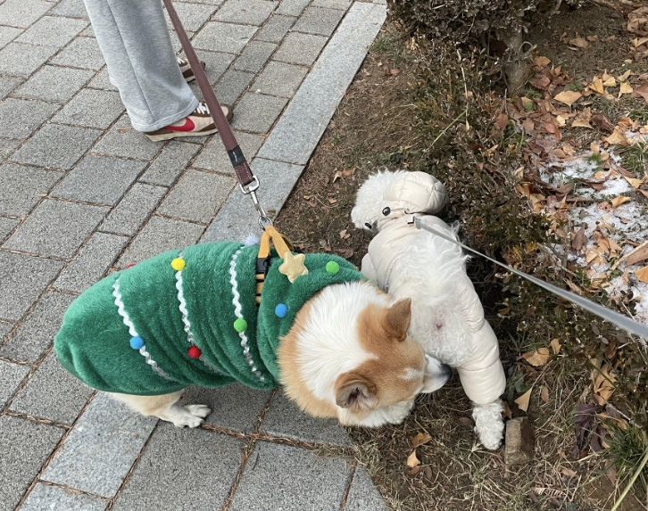
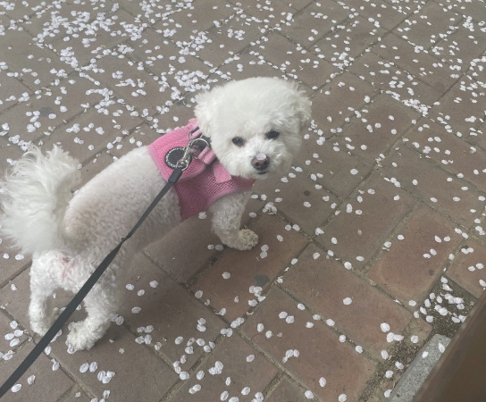
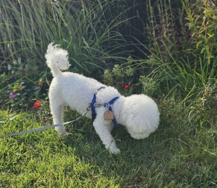
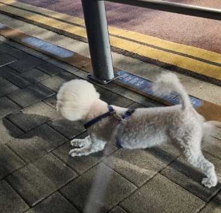
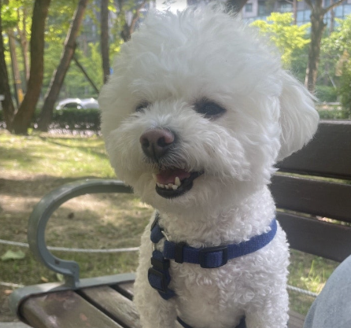
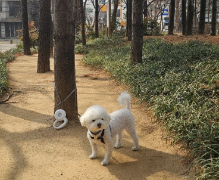
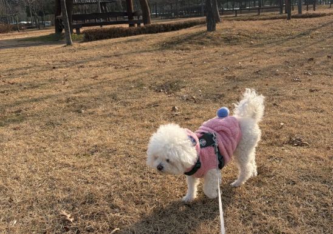
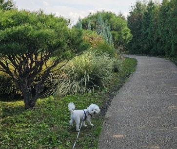

로이와 일상적으로 매일 하는 산책 외에, 그동안 함께 멀리 떠났던 특별한 기억들을 기록해 본다.
TRAVEL 대관령 여행
작게는 양재천부터 시작해 멀리는 대관령까지 가서 풍차를 구경했다. 거기까지 가는데 로이가 차 안에서 구토를 좀 했다. 마음이 아프고 걱정스러웠지만, 그래도 목적지에 도착해서 함께 좋은 추억을 만들 수 있어서 참 좋았다.
CAMPING 반려동물 동반 카라반 캠핑
로이를 데리고 카라반에 간 적도 있었다. 반려동물 동반 카라반이었는데, 로이를 여행 때 어디 맡기지 않고 가족과 항상 같이 여행할 수 있어서 무척 뜻깊고 좋았다.
LIFE 스타필드 몰 나들이
스타필드 몰에 로이를 데리고 갈 때는 전용 가방에 넣고 가거나, 스타필드 내에서 대여해 주는 유모차를 빌려서 태우고 다닌다. 생각보다 다른 강아지들이 많이 다녀서 주변 눈치가 보이지 않아 편안하게 다닐 수 Ust.
앞으로의 다짐
"막상 추억을 쓰려고 보니 가본 곳이 엄청 많지는 않은 것 같다. 아직은 반려동물 동반 서비스들이 널리 대중화되어 있지 않은 터이다. 앞으로는 로이가 함께 갈 수 있는 곳들을 더 많이 찾아서 부지런히 다녀봐야겠다."
📸 Photo Gallery







